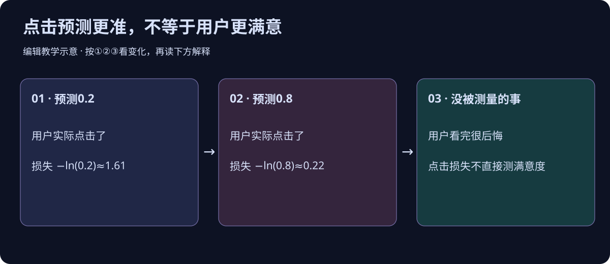

第3章 · 损失函数与反向传播
本章开篇生活情境与衔接为编辑教学改写，借鉴原视频从经历引出概念的讲解方法，不是作者原话；原视频线索与论文见下方对应段落。
先看一件具体的事
点击了，真的代表喜欢吗？

点击预测更准，不等于用户更满意 · 点击可放大先看这个场景
一个推荐系统把视频送到你面前。你点开，看了十秒，发现标题夸张、内容没用，退出。系统却记了一笔：这次推荐成功，因为你点击了。你觉得它懂你了吗？
问题出在哪里
原视频讲损失函数时，用的就是点击推荐这个入口。模型预测你点击的概率只有0.2，但你确实点了，系统会认为这次预测不够好。如果它预测0.8，你也确实点了，这次的惩罚就小一些。损失函数把“预测好不好”变成一个可以计算的数字。
模型怎样处理
真正要紧的问题在下一步：我们想要的到底是点击，还是看完之后觉得值得？如果训练只奖励点击，模型就会认真学习如何让人点进去。它可以把点击预测做得越来越准，同时把让你失望的内容排到前面。计算可能完全正确，目标却没有覆盖你在意的事。
再看一个变化
假设我们写下总损失＝点击损失＋β×满意度损失。β是满意度这一项的话语权。β为0时，这一项不会给参数更新贡献梯度。我们嘴上说“满意度很重要”，在这个目标里它却没有参与。给变量起一个温柔的名字，并不能代替把它写进优化目标。
放回完整流程
语言模型预训练常用下一个token的预测损失：训练文本接下来出现了哪个token，模型给它的概率有多大？这能推动模型学习语言中的模式。但把训练文本接得像，不等于每次回答都真实、有帮助，所以后面还需要讨论指令训练、偏好对齐和验证。
回到开头
现在再看“损失下降”这四个字，先多问一句：哪一个损失，在什么数据上下降？这不是挑字眼。它决定模型努力的方向。下面的数字会告诉你为什么预测0.8比0.2的惩罚小；开头的点击故事会提醒你，惩罚小仍然不等于目标选对了。
这一章怎么读先带着上面的问题往下看。每个概念先用白话接上情境，再给计算；遇到公式可以先看旁边的例子。动手实验和答案直接展开，论文留在相应概念后，想追根究底时再点开。
先动手试一试 → 3.1 带着问题进入模型
损失位于预测与更新之间。它把目标接进训练，反向传播再计算参数怎样影响这份损失；目标没有写进来，后面再努力也未必朝它走。
先沿箭头看懂：目标怎样影响每个参数
 目标和预测在损失处汇合；反向传播是计算梯度，更新由优化器执行。
目标和预测在损失处汇合；反向传播是计算梯度，更新由优化器执行。3.2 损失函数：把目标变成可优化的数字
把推荐故事中的“点开了”写成标签1，模型先给出一个概率。下面的交叉熵就是这次预测的罚分：真正点开时，模型事先给的概率越小，罚得越重。先弄懂它罚的是什么，再看它没有衡量什么。
损失函数把预测与训练目标的差异压缩成标量；优化器通过这个数字及其梯度更新参数。
把刚才的直觉一步步算出来
原视频的关键例子是点击率预测。二元交叉熵为 −[y ln p+(1−y)ln(1−p)]。若真实点击y=1，p=0.2时损失−ln0.2≈1.609；p=0.8时约0.223。优化让模型更准确地预测点击，但点击可能来自好奇、标题诱导或其他原因，不自动代表满意。
视频接着讨论多目标损失L=αL_click+βL_satisfaction。当β=0时，满意度项不会通过这一个加权项贡献梯度；这不等于模型在任何其他路径上都完全没有满意度信息。关键是把真正想优化的目标显式定义并评估。
先把训练目标说清楚。语言模型对每个位置输出整个词表的概率分布，训练文本给出该位置实际出现的token。最常见目标会提高这个目标token的概率，而不是直接给完整回答打“真实”分。
对正确token概率p，L=−ln p。p=0.1时约2.303，p=0.5时约0.693，p=0.9时约0.105。对一段文本可按有效位置求平均，padding等不参与的token需屏蔽；具体归约方式会影响数值。
不能只盯损失大小：不同词表、不同数据分布、不同长度处理下不一定可直接比较。预训练损失降低也不代表每道问答都更正确。验证集、任务评估与事实检查分别回答不同问题。
换你试一次：先猜，再算
两处目标token概率分别为0.5和0.25，平均负对数似然是多少？对应困惑度是多少？
参考答案与计算结果
平均损失(0.6931+1.3863)/2≈1.0397；困惑度exp(1.0397)≈2.828。
这个类比帮到哪里，停在哪里
损失低只说明更符合所设定目标，不自动等于事实正确、对用户有帮助或安全。
关联视频 · 已取得完整音轨并完成本机自动转写；原页面章节摘要缺失，本节已据音轨补充点击率、目标错位与多目标损失。术语尚非逐字精校。
动手看看：只改一个条件，会发生什么？
先固定“用户确实点击了”，把预测概率从0.2调到0.8，看损失怎么变。再问自己：这个滑块有没有测到用户看完是否后悔？没有被测量的东西，不会因为曲线漂亮就自动出现。
想亲手复现，就运行这段小实验
本例是编辑编写的教学计算，不是作者实验的代码复刻。先把 common.py 与本章脚本下载到同一个目录，再执行 python3 03_train_step.py。只使用Python标准库。
from common import weather_hidden, decode, softmax
import math
h = weather_hidden()
w = [[0.]*5 for _ in range(2)]
target, eta = 2, 0.5
p = softmax(decode(h,w))
loss_before = -math.log(p[target])
grad_z = [pi-(i==target) for i,pi in enumerate(p)]
grad_w = [[hj*gz for gz in grad_z] for hj in h]
# Check the analytic gradient against a numerical central difference.
eps=1e-5
for j in range(2):
for i in range(5):
w[j][i]+=eps
plus=-math.log(softmax(decode(h,w))[target])
w[j][i]-=2*eps
minus=-math.log(softmax(decode(h,w))[target])
w[j][i]+=eps
assert abs((plus-minus)/(2*eps)-grad_w[j][i])<1e-7
w = [[v-eta*g for v,g in zip(row,grad)] for row,grad in zip(w,grad_w)]
p_after = softmax(decode(h,w))
loss_after = -math.log(p_after[target])
print('hidden:', [round(x,6) for x in h])
print('dL/dlogits:', grad_z)
print('before:', round(loss_before,6), 'after:', round(loss_after,6))
print('target probability:', round(p_after[target],6))
assert loss_after < loss_before
实际运行输出
hidden: [0.330238, 1.669762]
dL/dlogits: [0.2, 0.2, -0.8, 0.2, 0.2]
before: 1.609438 after: 0.662489
target probability: 0.515567
先不急着读完每一行代码。找到输入、这次改变的量和最后输出，按上面的例子预测一次，再运行核对。若结果和直觉不同，打印中间值，看看差异从哪一步开始。
回到开头，你能解释了吗？
点击预测越来越准，为什么用户满意度仍可能下降？
β设为0时，满意度这一损失项还能推动参数变化吗？
用自己的话讲给一个没读过这一章的人听。能把问题、过程和结果接起来，再看公式就会容易一些。